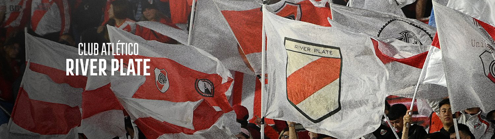

Titulos era profesional (1920-2023)
- Primera Division 1920
- Primera Division 1932
- Copa de Competencia 1932
- Copa Campeonato 1936
- Copa de Oro 1936
- Copa Dr.Ricardo Aldao 1936
- Primera Division 1937
- Copa Dr.Carlos Ibarguen 1937
- Primera Division 1941
- Copa Adrian C.Escobar 1941
- Copa Dr.Carlos Ibarguen 1941
- Primera Division 1942
- Copa Dr.Ricardo Aldao 1942
- Copa Dr.Carlos Ibarguen 1942
- Primera Division 1945
- Copa Dr.Ricardo Aldao 1945
- Primera Division 1947
- Copa Dr.Ricardo Aldao 1947
- Primera Division 1952
- Copa Dr.Carlos Ibarguen 1952
- Primera Division 1953
- Primera Division 1955
- Primera Division 1956
- Primera Division 1957
- Metropolitano 1975
- Nacional 1975
- Metropolitano 1977
- Metropolitano 1979
- Nacional 1979
- Metropolitano 1980
- Nacional 1981
- Primera Division 1985-86
- Copa Libertadores 1986
- Copa Intercontinental 1986
- Copa Interamericana 1987
- Primera Division 1989-90
- Apertura 1991
- Apertura 1993
- Apertura 1994
- Copa Libertadores 1996
- Apertura 1996
- Clausura 1997
- Supercopa Sudamericana 1997
- Apertura 1997
- Apertura 1999
- Clausura 2000
- Clausura 2002
- Clausura 2003
- Clausura 2004
- Clausura 2008
- Final 2014
- Copa Campeonato 2014
- Copa Sudamericana 2014
- Recopa Sudamericana 2014
- Copa Libertadores 2015
- Copa Suruga Bank 2015
- Recopa Sudamericana 2016
- Copa Argentina 2015-16
- Copa Argentina 2016-17
- Supercopa Argentina 2017
- Copa Libertadores 2018
- Recopa Sudamericana 2019
- Copa Argentina 2018-19
- Supercopa Argentina 2019
- Liga Profesional 2021
- Trofeo de Campeones 2021
Un total de 65 Trofeos
Tecnicos Mas Ganadores
Marcelo Gallardo
- Copa Sudamericana 2014
- Recopa Sudamericana 2014
- Copa Libertadores 2015
- Copa Suruga Bank 2015
- Recopa Sudamericana 2016
- Copa Argentina 2015-16
- Copa Argentina 2016-17
- Supercopa Argentina 2017
- Copa Libertadores 2018
- Recopa Sudamericana 2019
- Copa Argentina 2018-19
- Supercopa Argentina 2019
- Liga Profesional 2021
- Trofeo de Campeones 2021
14 titulos con la banda lo convierten a Marcelo en el tecnico mas ganador
Ramon Ángel Diaz
- Copa Libertadores 1996
- Apertura 1996
- Clausura 1997
- Supercopa Sudamericana 1997
- Apertura 1997
- Apertura 1999
- Clausura 2002
- Torneo Final 2014
- Copa de Campeones 2014
Con 9 titulos se convierte en el segundo tecnico más ganador con la banda